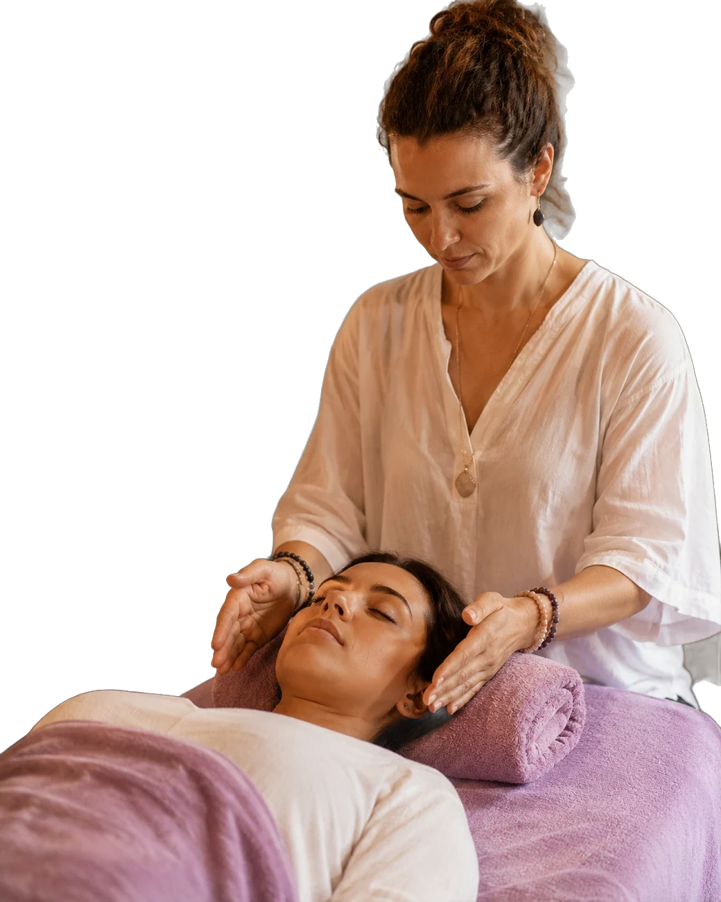
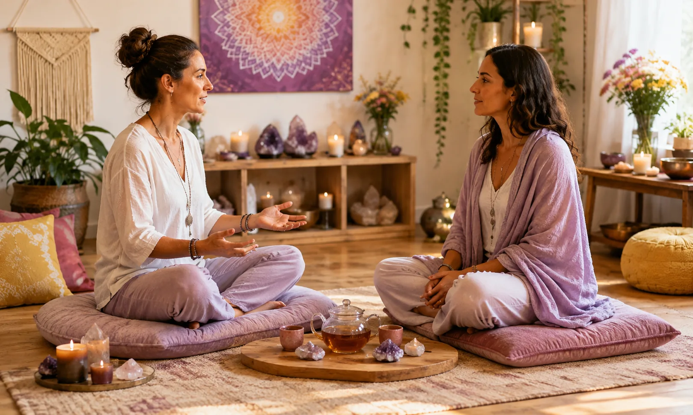
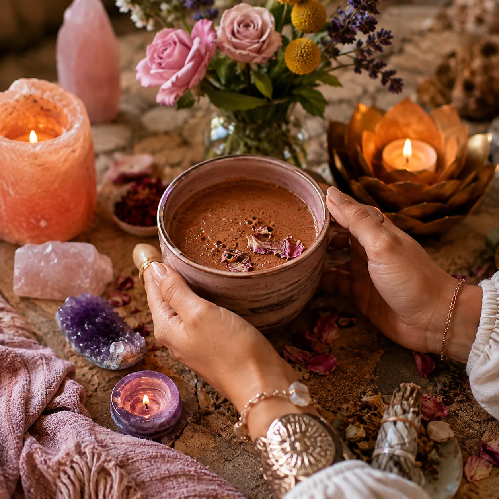
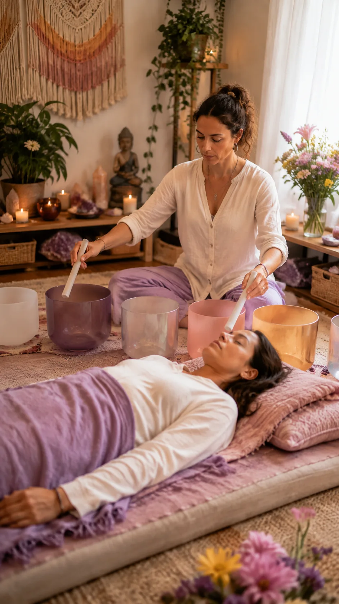
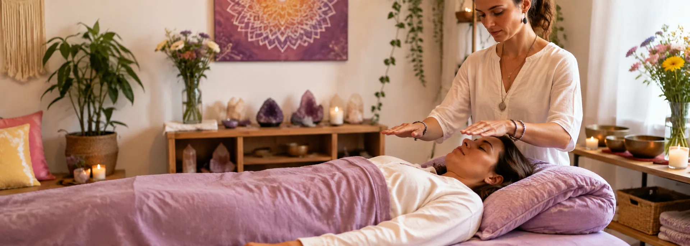
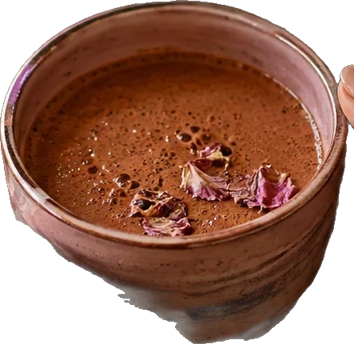

Terapias holísticas · Coaching · Mentorías
Lo que se repite en tu historia se puede transformar
Un espacio para mirar de dónde viene lo que te pasa, ordenarlo con herramientas concretas y elegir cómo seguís. Sesiones individuales y procesos de acompañamiento, presenciales y online.

01 Por dónde entrar
Cuatro abordajes,
una misma mirada
No hay un camino único. Elegimos juntas por dónde empezar según lo que te esté pasando hoy.
01 Sanación transgeneracional
Miramos tu árbol familiar para encontrar las lealtades, las repeticiones y los duelos que se transmiten sin que nadie los nombre. Cuando el patrón se ve, deja de manejarte desde atrás.
Consultar por este abordaje
02 Coaching holístico
Objetivos concretos trabajados desde el cuerpo, la emoción y el sentido, no solo desde la cabeza. Salís de cada encuentro con una acción clara para la semana.
Consultar por este abordaje
03 Mentorías
Un proceso sostenido en el tiempo para quienes ya empezaron a moverse y quieren compañía firme mientras cambian de etapa. Seis a ocho encuentros con material propio.
Consultar por este abordaje04 Terapias vibracionales
Sonido, cristales, aromaterapia y trabajo energético para bajar el ruido del cuerpo y volver a escucharte. Se usan solas o como apoyo dentro de un proceso más largo.
Consultar por este abordaje

02 El espacio
Un lugar donde bajar
el volumen de afuera
Cada encuentro empieza igual: te sentás, contás y respirás. Recién después elegimos la herramienta —conversación, árbol, cuencos, aceites— según lo que aparezca ese día.
Nadie cambia lo que no puede ver. Mi trabajo es ayudarte a verlo, y quedarme mientras lo movés.
- +9años acompañando procesos
- 90'dura el primer encuentro
- 2modalidades: presencial y online
03 El proceso
Del ruido a la onda
ruido
-
01
Escuchamos lo que suena
Primer encuentro de 90 minutos: contás lo que te trae, sin ordenarlo antes. Ahí aparece el ruido de fondo que venís escuchando hace años.
-
02
Vemos el patrón que se repite
Armamos tu árbol de tres generaciones y buscamos las coincidencias: mismas edades, mismos duelos, mismas decisiones. Lo heredado se vuelve visible.
-
03
Transformamos la frecuencia
Con herramientas del abordaje que elijas —conversación, actos de reparación, sonido, energía— empezamos a mover lo que estaba fijo.
-
04
Sostenemos el cambio
El cambio se afirma en lo cotidiano. Cerramos el ciclo con prácticas propias y revisiones espaciadas para que lo nuevo no se apague.
Empezar mi proceso
04 Voces
Lo que cuentan
quienes ya pasaron
Llegué por un tema de trabajo y terminé entendiendo una historia familiar que venía repitiendo hacía tres generaciones. Nunca me sentí juzgada.
Hice ocho encuentros de mentoría mientras cambiaba de rubro. Salía de cada uno con una tarea concreta, no con frases lindas.
Empecé con las sesiones de cuencos por insomnio. Me ayudaron a bajar un cambio y a sostener también el tratamiento que ya estaba haciendo.
05 Antes de empezar
Preguntas que
siempre me hacen

¿Esto reemplaza un tratamiento médico o psicológico?
No, y es importante decirlo claro: el acompañamiento holístico es complementario y no sustituye consultas, diagnósticos ni tratamientos de salud. Si estás en tratamiento, lo sumamos como apoyo, nunca en su lugar.
¿Necesito preparar algo para la primera sesión?
Solo un rato tranquilo y ganas de contar qué te trae. Si vamos a trabajar el árbol familiar, después te voy a pedir algunos nombres y fechas, pero eso lo armamos juntas.
¿Las sesiones son presenciales u online?
Las dos. Las sesiones de sonido y trabajo energético se disfrutan más en el espacio; el coaching y las mentorías funcionan igual de bien por videollamada.
¿Cuánto dura un proceso?
Una consulta puntual se resuelve en un encuentro. Los procesos transgeneracionales y las mentorías se trabajan en ciclos de seis a ocho encuentros, con prácticas entre uno y otro.
¿Cómo reservo y cómo se abona?
Escribime por WhatsApp, charlamos un rato y coordinamos día y horario. Ahí mismo te paso las modalidades de pago vigentes.
Primer paso
Escribime y vemos
por dónde empezar
Contame en dos líneas qué te está pasando. Te respondo yo, sin formularios ni cadenas de mails.
11 3606-6530Respondo de lunes a sábado. Sesiones con turno previo.